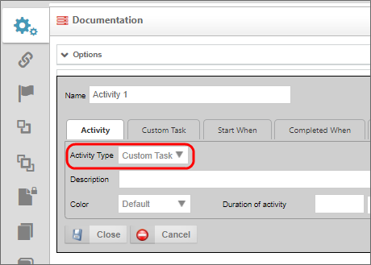
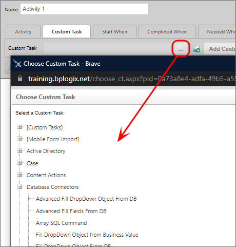

A Process Timeline Custom Task can be added to a Process Timeline Definition just like a built-in activity type. The Process Timeline custom task can't have any user participants; they run and then immediately transition to the next activity in the Process Timeline without any user intervention. They are configured similarly to standard task types and must exist in the path/route of the Process Timeline to be executed.
To use a custom task in a Process Timeline Definition, select Custom Task from the Activity Type dropdown in the Activity tab.

Then click on the Custom Task tab. Select your Custom Task from the object picker and, once selected, click the Add Custom Task button. This activity will implement the Custom Task when it starts.
